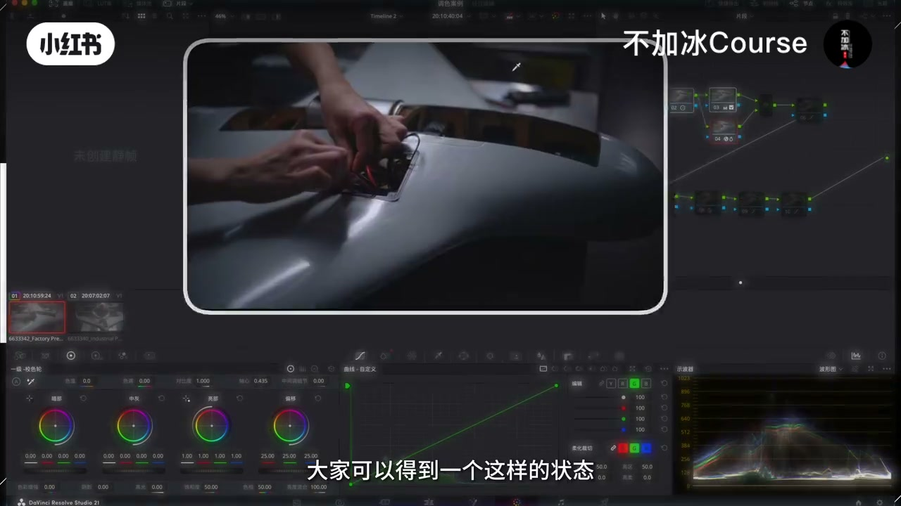
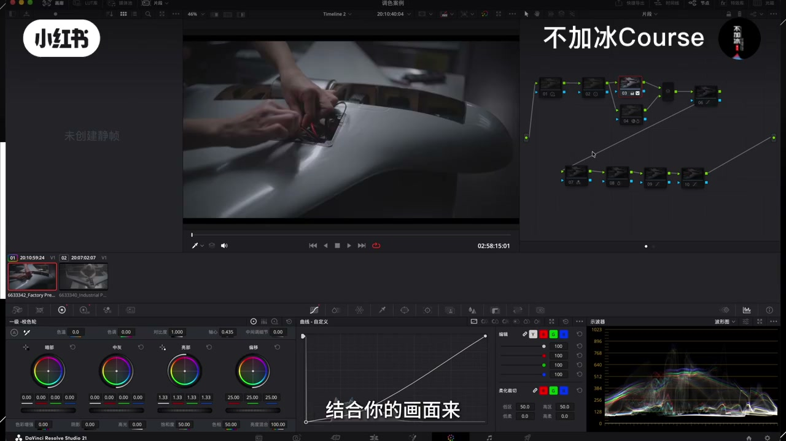
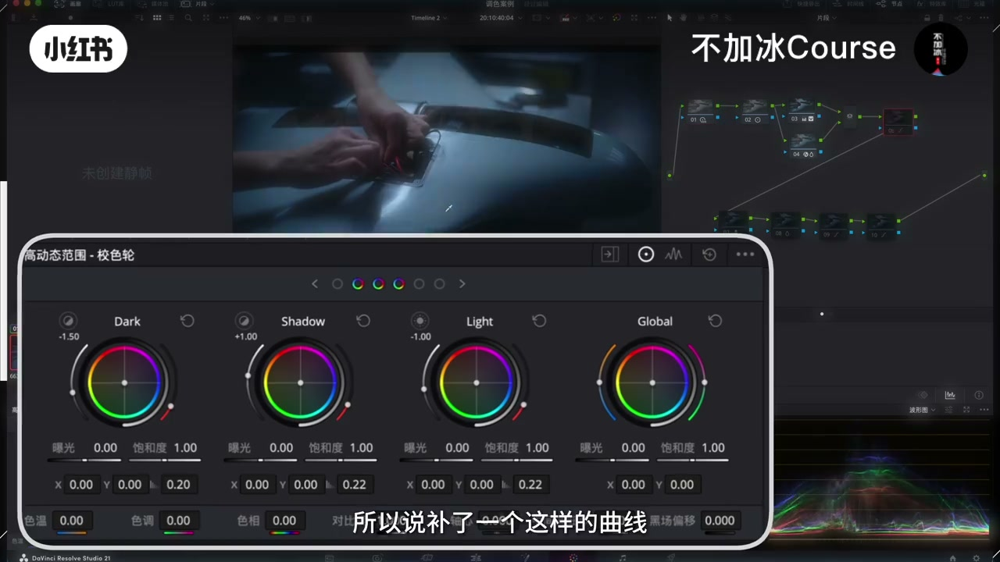
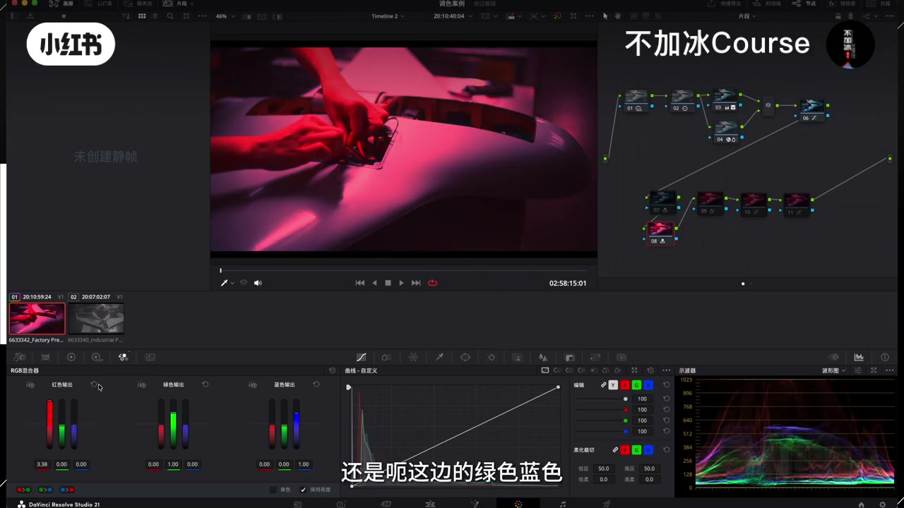
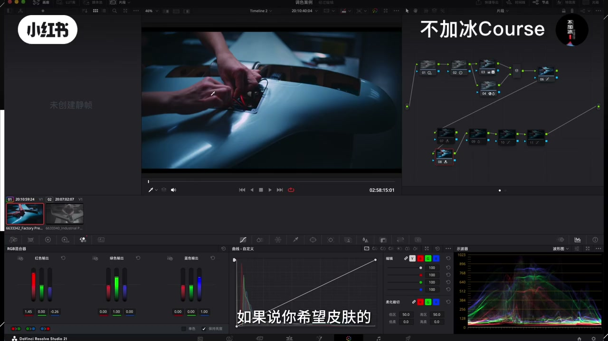
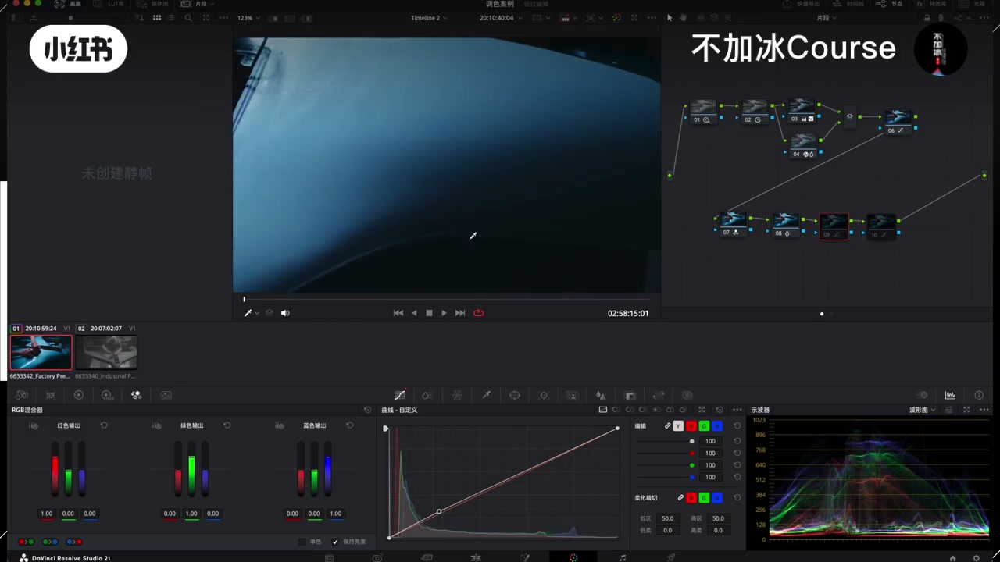
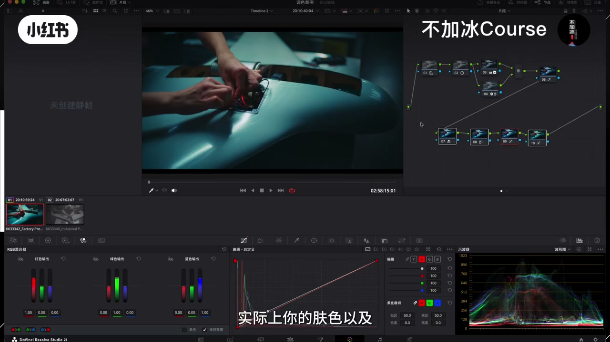
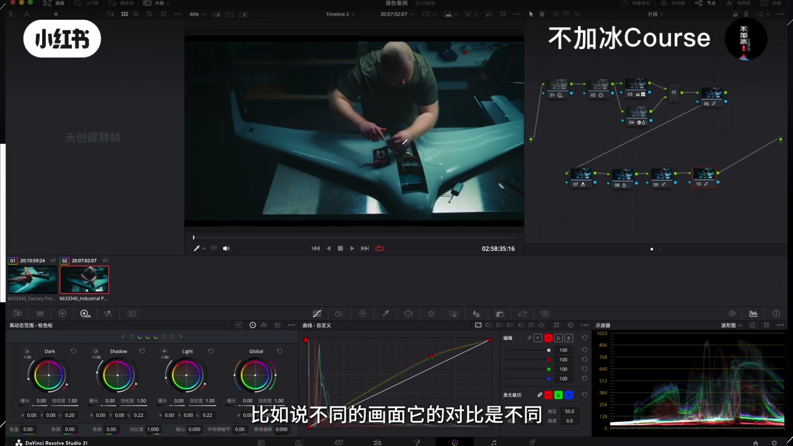

内容要点
「达芬奇调色思路｜基于明暗实现颜色分级」教程要点：大家在调色的时候你一定要关注你索条画面的明暗的分布 → 因为它会影响你整个画面的风格化的颜色的处理 → 包括在这个里面的肤色的控制 → 你只要理清了你画面的明暗的分布；详见正文。
知识结构
大家在调色的时候你一定要关注你索条画面的明暗的分布
那我在7号节点这边做的是RGB混合器
所以说我在这边大概让皮肤稍微突出了一些
- 大家在调色的时候你一定要关注你索条画面的明暗的分布
- 因为它会影响你整个画面的风格化的颜色的处理
- 包括在这个里面的肤色的控制
- 你只要理清了你画面的明暗的分布
- 你对颜色的节点的控制的思路就会非常清晰
大家在调色的时候你一定要关注你索条画面的明暗的分布
00:00–02:35大家在调色的时候你一定要关注你索条画面的明暗的分
大家在调色的时候你一定要关注你索条画面的明暗的分布；因为它会影响你整个画面的风格化的颜色的处理；包括在这个里面的肤色的控制；你只要理清了你画面的明暗的分布；你对颜色的节点的控制的思路就会非常清晰；颜色的控制在这个画面里面的调整就会非常轻松的控制过来；比如说在这个画面的原片；大家可以得到一个这样的状态；那我们如何去给这个画面不仅做到足够多的蓝青色的同时；也让肤色得到很好的保留；那这个过程是怎么实现的；大家来看我们右边的所有的节点；你看它的肤色的控制节点实际上主要的变化就在10号和7号节点；开关这两个节点大家来看；这个肤色会带来非常直观的变化；直接来看这边的还原节点2号和3号节点；3号节点首先做的内容就是放大画面的明暗；所以说我需要压低暗部并且去提亮亮部；然后压暗部我采用曲线压到这个位置；那有的时候我们也会去压这个暗部色轮；或者说去压曲线上这个黑点；也可以在这个画面里边；我没有去直接压暗部色轮是因为；这个暗部色轮一旦下压的话；大家可以看到这个位置；它会暗的特别快；我希望这个位置得到一些保留；所以说我这边在曲线上做的这个黑点；我是没有去动的；这个不同的画面都不一样；结合你的画面来；这个是好理解的；前置节点2号节点对比都做了1.17就OK了；到了之后我发现这个画面的饱和度是不够的；虽然说我在3号节点这边HDR小轮是做了；这个饱和度拉满的状态；但是依旧不够；所以说我需要再补；再补的话4号节点我这边用的是这个饱和度的插件；在之前给到过大家；如果说大家新关注的小伙伴没有；可以单独点准或者私信；单独管我要就可以了；把饱和度放大；饱和度放大；这个是空饱和；高饱和的这种红色的饱和度会放大的太高；我在这边做了一点红色的饱和度；我的控制；这个看情况来少空了一点点；那这边的饱和度加出来之后；大家可以看到肤色的饱和会比没做之前更加的自然一些；那我在这边就彻底给它拉出来；回到这个位置之后；前置的有一个节点是做的HDR色轮；这边做了一点点轻微的偏移；偏出来之后这个画面的迷暗关系是不够的；不强烈的；所以说补了一个这样的曲线；那这个曲线做过来之后；大家可以看到这个画面的对比就会被彻底打开；到这个位置大家应该比较好理解；如果说你觉得到达这一步之后；这个画面的迷暗关系还有问题；你可以在它的前边；或者说它的后边；或者说一级还原的前面都可以；你可以去补局部调整；这个局部调整的内容可以结合你的画面；比如说有些地方我觉得它的亮度应该更高一点；但是显然没有；你可以适当的再去补亮度；这种节点往哪放都可以；那整体得到的效果其实大差不差都行


02:34–04:38那我在7号节点这边做的是RGB混合器
那我在7号节点这边做的是RGB混合器；我重新给大家调一遍；这个节点我先关掉；在这边的话调的这个部分是皮肤；皮肤的话它是橙黄色居多；有红又有绿；并且红色居多；你要做什么位置；你就要去找什么位置对吧；那回到这边大家都清楚的是；在RGB混合器这边；你不管拉大红色输出的红色；还是这边的绿色蓝色；它都会起到一样的效果；什么效果；加红色；但是加的多少加的力度是不一样的；你要做哪个部分；你要去看哪个部分；在皮肤的这个位置的话；一定是红色会居多；因为红色特别少的话；那这个地方蓝绿居多；那皮肤它就不是橙黄色；当我把这个地方放大的时候；你可以看到皮肤的这个颜色就会被加强；同样的话在RGB混合器里边；它每一个通道里边的调整；都是全局的调整；也就是说它不会是针对一个位置去加；所以说你在这个地方去加红色的同时；如果对环境实现了多加；那你去给它减掉就可以了；也就是说你的调整实际上是；这样的一个调整；我调的幅度大一点；就是皮肤加强环境的蓝色也会变多；因为我在这边去减红色的时候；红色的补色不就是青色吗；那这个平衡力度结合你的实际画面来看；如果说你希望皮肤的橙黄色再居多一点；你可以来这边继续去补绿；它也会往黄色去走；这个看着画面来；我这边不多说；大家如果有往期我们参加过西洋科的学员；你们如果关于RGB红额器有学得不清楚的；直接去看我们往期课程的第一节课的后半集；大概有半个小时关于RGB红额器的讲解；看完你们就会了；我这边就不多说；因为这个一说的话太长了；补一个什么样的节点；补一个这样的调整；就是色彩切片器这边去找蓝色；我这边调的力度比较弱；如果说你希望它力度更大一点；你可以把这个拉大；这个蓝色就会更强；这个看情况来吧；我这边是有蓝有青的；都动了一点点；包括它的亮度调整都行；我这边就还行；我就不动了；这一步调完之后；我需要给这个画面进暖色；你只要去动你的亮部的话；它会带着皮肤和这种位置的变色一起走；并且随着你的控制的不同；有可能也会影响到这种中灰；或者这种偏暗部一点的位置；都有可能；这个的控制完全看你自己


04:37–06:37所以说我在这边大概让皮肤稍微突出了一些
所以说我在这边大概让皮肤稍微突出了一些；其实皮肤是有一点点偏品偏红的；那我就不管了；因为我后边会有一个亮部加暖色的控制；那我这个后边亮部加暖色的控制；如果控完了之后；皮肤还有问题；我来这边再细控；因为我之前调过的东西不代表调完之后我就不动了；我随之可能还会再改的；回到后边的10号节点；那我做的就是曲线打点；提这种位置的红色和绿色；红加绿不是得黄色吗；那这个地方的橙黄色就会偏高一点点；如果说你希望这种地方受影响的比较弱；你可以拆开打点往下控；我这边觉得含星我是不控的；我就直接放到这儿了；中间的这个节点是；你可以把它做到和10号节点一样；完全没有关系；我就分开了；9号节点这边；我觉得暗部的亮度少来了一点点；如果觉得不做；那就不做；如果想要合并也可以；那这个画面的颜色是一张；你的肤色以及环境的颜色整体的控制；大概它就从最开始的这个样子；就过到了这个状态；那大家可能有的时候会把这个10号节点；像这种加暖色的控制也会往前放；就是有的时候大家也会习惯以这样的调整；也可以；取决于你的画面；往前放的话；你们一般做的就可能是前置节点；这边把这个颜色偏出来；偏出来之后我用这种位置；我把这个线关了；我在这种位置去往暖色推；在暖色推的同时；你的前边的这个节点继续放大；放大什么；放大它的蓝色；就不停的让它们之间去做对冲；最终起到亮部偏暖色；然后环境偏蓝青的调整；那我这边的话就放到了最后；同样后边的这个画面；想要匹配我们刚刚做好的这个颜色；是不是就很简单；直接把这个节点套过来；套过来之后两个画面它如果；比如说不同的画面它的对比是不同；就是明暗的分布是不同；轻微的调整就可以了；整体过来的颜色差别不会太大；比如说它对比有点不同；你可以来一级还原这边；继续去调整你的下压的位置；都是可以的；那对于这个画面里面；其实我们就是依据画面的；明暗分布；实现了皮肤环境颜色的隔离；大家可以看到这个皮肤和这个环境的颜色；好了；那这个调色的话就给大家说完了；大家如果有不清楚的；可以点主页或者单独私信；再问我




口述/画面要点（40段）
结合 Whisper medium 与画面大字整理；专有名词已校对。
大家在调色的时候你一定要关注你索条画面的明暗的分布
因为它会影响你整个画面的风格化的颜色的处理
包括在这个里面的肤色的控制
你只要理清了你画面的明暗的分布
你对颜色的节点的控制的思路就会非常清晰
颜色的控制在这个画面里面的调整就会非常轻松的控制过来
比如说在这个画面的原片
大家可以得到一个这样的状态
那我们如何去给这个画面不仅做到足够多的蓝青色的同时
也让肤色得到很好的保留
那这个过程是怎么实现的
大家来看我们右边的所有的节点
你看它的肤色的控制节点实际上主要的变化就在10号和7号节点
开关这两个节点大家来看
这个肤色会带来非常直观的变化
直接来看这边的还原节点2号和3号节点
3号节点首先做的内容就是放大画面的明暗
所以说我需要压低暗部并且去提亮亮部
然后压暗部我采用曲线压到这个位置
那有的时候我们也会去压这个暗部色轮
或者说去压曲线上这个黑点
也可以在这个画面里边
我没有去直接压暗部色轮是因为
这个暗部色轮一旦下压的话
大家可以看到这个位置
它会暗的特别快
我希望这个位置得到一些保留
所以说我这边在曲线上做的这个黑点
我是没有去动的
这个不同的画面都不一样
结合你的画面来
这个是好理解的
前置节点2号节点对比都做了1.17就OK了
到了之后我发现这个画面的饱和度是不够的
虽然说我在3号节点这边HDR小轮是做了
这个饱和度拉满的状态
但是依旧不够
所以说我需要再补
再补的话4号节点我这边用的是这个饱和度的插件
在之前给到过大家